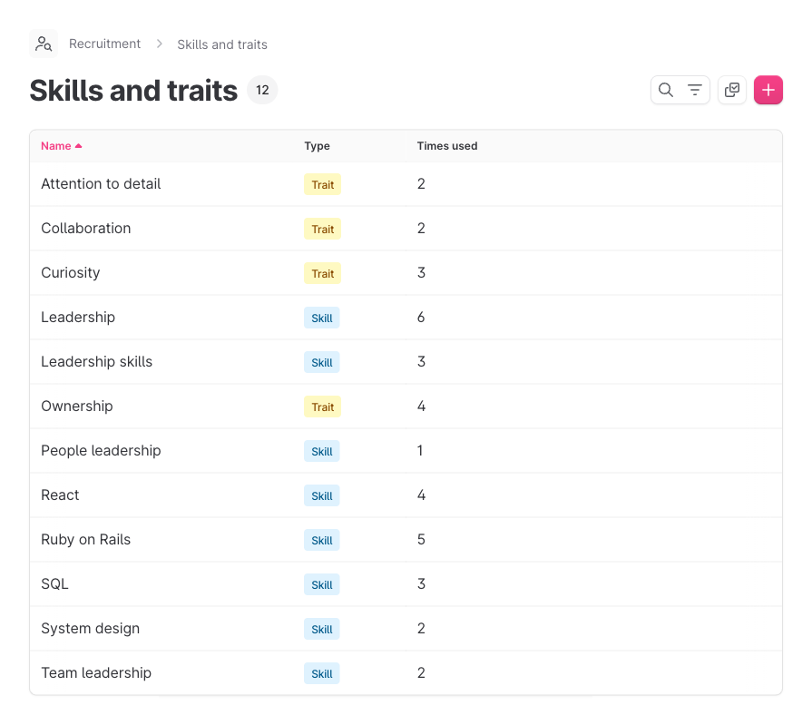
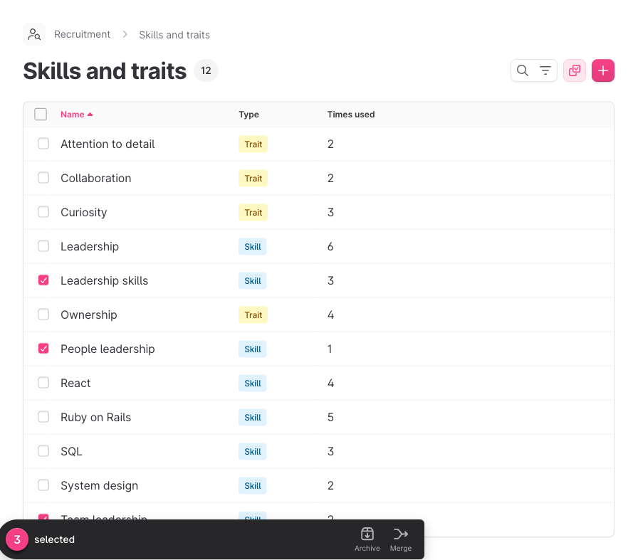
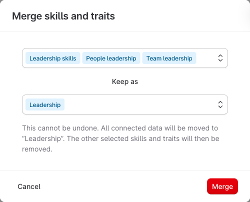
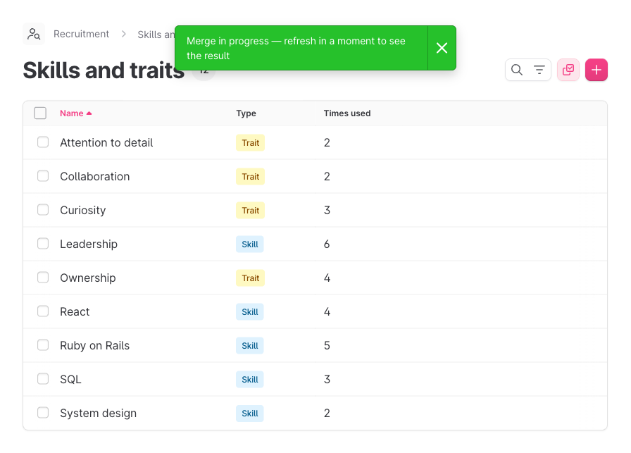
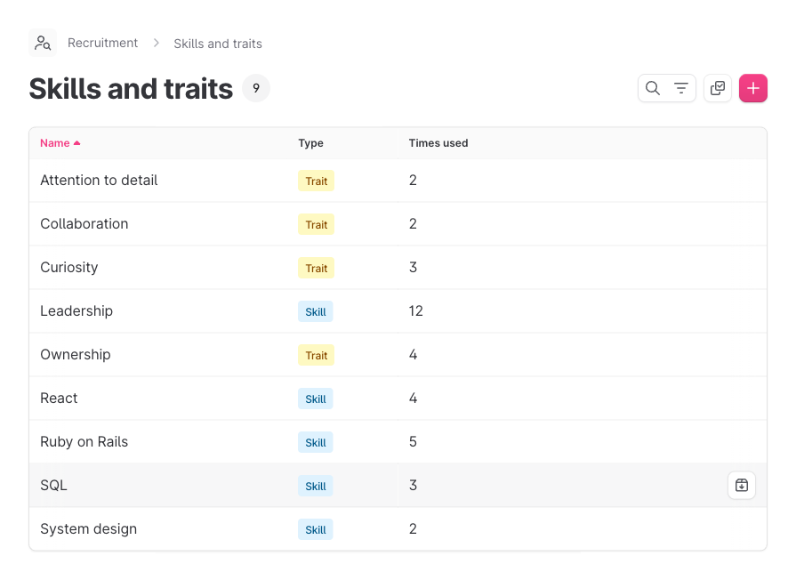

A recruiter picks the duplicates, picks the one to keep, and presses merge. Everything those duplicates ever touched moves to the survivor — in one atomic, tenant-safe, auditable step.
Every company builds a list of skills and traits to score candidates against. Over time it fills with
near-duplicates — Leadership, Leadership skills, Team leadership,
People leadership. Four names, one idea.
Each duplicate splits the signal: the "times used" count fragments, the scoring picker gets noisier, and analytics treat one competency as four. Until now the only tool was archive — you could hide a duplicate, but everything attached to it was stranded.

Anchor the whole talk on this screenshot. Four Leadership variants, each with its own "times used" — 6, 3, 2, 1.
That's the same competency scored four different ways, and no report can tell they're the same thing.
The pain isn't cosmetic. Fragmented usage counts make the picker untrustworthy and quietly skew every
competency-level insight. Archiving never solved it because archiving doesn't move the data anywhere.
What shipped
Select the duplicates, choose the one to keep, confirm. Everything the sources touched — picks, scores, questions, candidate competencies, interview-kit ordering — re-points to the survivor. The sources are removed and the merge is written to the audit trail.
One competency, one count, one clean entry in the picker. The rest of this is the happy path, frame by frame — then the engineering decisions that make it safe to press that button.
Keep this slide short — it's the thesis. The product promise is "consolidate, don't hide," and the engineering promise is "without losing a single attached record." Both halves matter; the next two acts cover each.
Demo · step 1 of 4

Bulk-select the three weaker variants. Leadership — the one we keep — stays unchecked.
Walk it slowly: turn on bulk select, tick the three sources. The merge action only appears once two or more rows are selected, which is also the guard against an accidental single-row "merge".
Demo · step 2 of 4

The modal lists the sources as tags and asks one thing: which entry survives? Keep Leadership.
The source tags are the deliberate signal here — the team chose them over an affected-counts preview from the original mockup, because the tags answer the question that actually prevents mistakes: "am I merging the right things into the right target?" Naming the survivor is the only decision the recruiter has to make.
Demo · step 3 of 4

Confirming hands the work to a single background job. The recruiter gets an immediate acknowledgement and carries on.
Be honest on this slide: there's no live progress bar — that was deferred with product sign-off. For a real-world library the merge is near-instant; the background job exists for correctness and for the rare large merge, not because the UI makes you wait.
Demo · step 4 of 4

The three variants are gone. Leadership now reads 12 — the exact sum of everything that used to be scattered across four rows.
This is the whole pitch in one number. 6 + 3 + 2 + 1 = 12, and nothing was double-counted or dropped — the count is the proof that every attached record followed the merge. The picker is clean, and analytics now see one competency where they used to see four.
How it's built · 1
A merge rewrites a lot of rows. If it half-finishes, the library is worse off than before it ran — so the whole thing is one atomic transaction inside a single background job.
The deadlock-ordering detail is the kind of thing that only shows up under concurrency in production. Locking in sorted id order is a small, deliberate choice that quietly removes a class of bug. The caps were tuned down from an earlier, far higher ceiling once we understood the real worker cost.
How it's built · 2
A skill isn't one row — it's the hub of a small graph. The merge re-points every spoke to the survivor before the sources are removed.
This was the deepest part of the work. "Move a skill" sounds like one update; it's five relationships with their own edge cases, plus a product call on conflicting questions. Getting the union rule pinned down with product up front is why there was no guesswork in the implementation.
How it's built · 3
The job re-scopes the source ids to the company at run time, so a crafted id from another tenant simply isn't in scope to delete. Cross-tenant damage is unreachable, not just unlikely.
A self-merge guard, and an active-into-active rule — a late product change means you unarchive before you merge, so an archived entry can't be revived as a side effect.
A Flipper flag plus a policy check that reuses the existing destroy permission — no new permission surface to reason about, and a clean on/off switch for release.
The tenant-safety framing is the one to dwell on: it's not "we validate ownership," it's "the dangerous operation can't see another tenant's rows in the first place." Re-scoping at run time turns a potential security review finding into a non-event. Reusing destroy? for the policy means we didn't invent a new permission model for a destructive action.
How it's built · 4
Merged sources are hard-deleted — but never without a trace, and never leaving stale data behind them.
merge audit record naming the survivor and the sources — the designated recovery surface if a merge ever needs to be understood after the fact.The pattern worth calling out: side effects fire after the transaction commits, not during it. Re-tracking insights or reindexing search mid-transaction would either run against half-merged data or get rolled back. Deferring them to after-commit is what keeps the atomic guarantee and the downstream systems consistent at the same time.
The honest part
Putting the cuts on an accent slide signals they were choices, not gaps. Each one is a place where the team traded a nice-to-have for shipping the core value sooner, and each was agreed with product rather than dropped quietly. That's the part worth being proud of without saying so.
Recruiters get a library they can trust, the picker gets quieter, and competency analytics finally count one thing once — delivered as an atomic, tenant-safe, auditable operation that's safe to hand to every customer.
Land on the user outcome, not the engineering. The engineering earns the right to make the claim — atomic, tenant-safe, auditable — but the thing the customer feels is "my skills list is finally clean and my numbers are finally right."